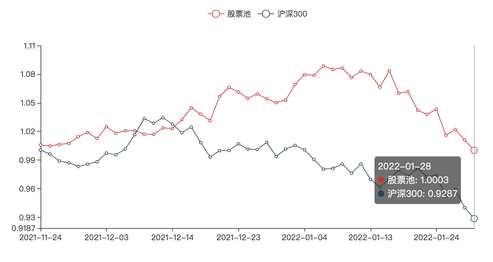

知易行难，菜篮子组合回撤了0.85(2022复盘①)
¶菜篮子组合回撤了0.85
从开始启动项目至今两个月，到1月28日农历牛年的最后一个交易，组合的净值为1.0003，一切又回到了起点。整个一月份上证下跌了7.65%，创业板下跌了12.45%，沪深300下跌了7.62%。单纯从表现来看跟指数的表现是一致的，但是组合的净值整体从最高点回撤了0.85，主要回撤集中在后两周。

¶知易行难
¶预测指数的下跌
从1月4日，创业板下跌后，我们预测1月5日还会有一次下跌，自此，创业板会正式进入下跌通道。整个一月份期间，我们做出如下判断：
- 1月5日，创业板会有2%以上的下跌；
- 1月18日，会冲高到20日均线，收十字，随后继续下跌，跌幅超过2%；
- 1月25日，会有两个连续的2%以上下跌；
除了18日没有收十字星，这波下跌通道中的几次大跌，都准确的预测到了。对此我们做出的应对是把标的尽可能的投入的主板中。但是主板也随着情绪的退潮从1月24日开始走坏了。
¶忽略了情绪的退朝和失控
在创业板开始下跌的时候，净值依然在逆势增长，后面经历了一些回调，到1月17日的时候，组合的净值基本上恢复到前期最高水平，回到了1.0837。自此我们彻底忽略了指数，同时也忽略市场的情绪，而情绪正是从此时开始发生了变化。1月18日，妖股龙头九安医疗将价格最后定格在88.88元，当日收跌停，自此情绪开始退潮。我们坚持固有的策略。虽然在主板避险，但是最终没有躲过弱势的市场。在1月份的最后几个交易日，我们也撸到了几个涨停，整体上持仓标的连续止损，大幅回撤。而最后一周的回撤主要来自于1月18日~1月25日的标的。
¶最后的机会依然没有退出
- 1月21日，分时中全市场全行业全面看空。
- 1月24日，盘后可选的行业已经减少到3个，概念减少到2个。
在大幅回撤之后，因为空出来的仓位较多，我们却加大仓位投入，此时，我们忽略了市场的情绪。
¶2个月的总结
- 基础策略和行业叠加的策略在整体退潮前被验证是有效的。
- 交易开仓是非实时的，在市场整体退潮期的时候，应该通过适当的调整仓位比例来有效的控制回撤。
¶2月的策略方向：控制仓位
- 明确在市场不同状态下的仓位比例，当前阶段，把每天开仓控制在1~2个。
- 弱势市场下，继续强调行业的趋势。
- 讨论是否在空趋势下加入止损逻辑。